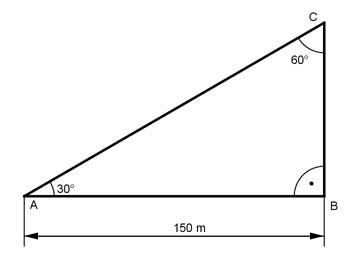

Pythagoras Aufgabe 60 Ein Beobachter sieht aus 150 m Entfernung und unter einem Erhebungswinkel von 30° den Lichtfleck, den ein senkrecht nach oben gerichteter Scheinwerfer an der Wolkenuntergrenze erzeugt. Wie hoch stehen die Wolken in m?  Das Dreieck ist die Hälfte eines gleichseitigen Dreiecks, wegen der Winkel. --> BC = AC/2 Satz von Pythagoras im Dreieck ABC: AC² = AB² + BC² | -BC² AC AB² = AC² - (----)² 2 AC² 150² = AC² - ----- |*4 4 4 * 150² = 4 * AC² - AC² 4 * 150² = 3 * AC² | :3 4 * 150² AC² = ---------- = 30 000 m² |√ 3 AC = 173,2 m BC = AC/2 = 86,6 m